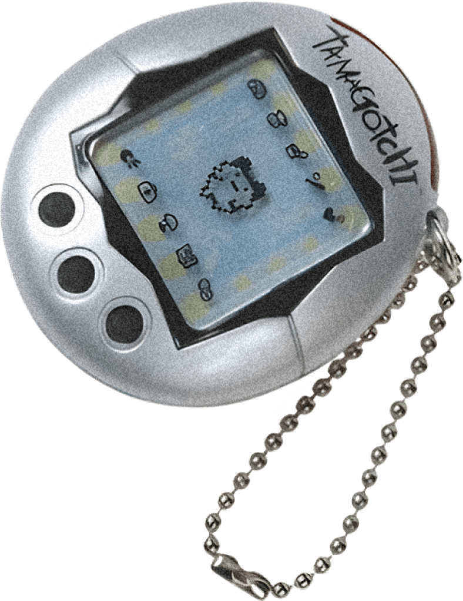
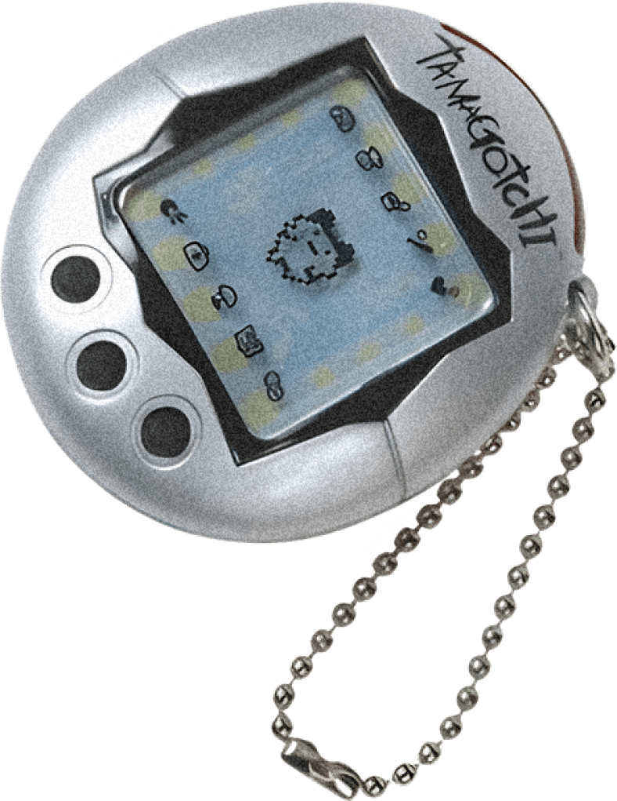

О нас

помогаем людям
из разных поколений
лучше понимать друг-друга
Наша миссия помочь людям из разных поколений лучше понимать друг друга, благодаря изучению сленга, информации о культовых явлениях прошлого и прохождению тестов на знание особенностей разных поколений
Медиа о поколениях — веб-сайт, который помогает людям из разных поколений лучше понимать друг друга. Сайт о разных поколениях может служить не только источником информации, но и местом для взаимопонимания между разными возрастными группами, пространством для всех, кто стремится расширить свой кругозор и открыт новому.
Люди повсеместно сталкиваются с отсутствием взаимопонимания между людьми разных возрастов
Медиа о поколениях — веб-сайт, который помогает людям из разных поколений лучше понимать друг друга. Сайт о разных поколениях может служить не только источником информации, но и местом для взаимопонимания между разными возрастными группами, пространством для всех, кто стремится расширить свой кругозор и открыт новому.

Многие отмечали, что часто сталкивались
с отсутствием взаимопонимания между
людьми разных возрастов
респондентов мало знакомы с языком и культурой людей других поколений

респондентов считают, что знание о культуре других поколений способно помочь лучше коммуницировать с людьми разных возрастов
опрошенных хотели бы ближе познакомится с культурой людей разных возрастов
людей сталкивались с ситуацией, когда они не понимали некоторые слова из речи людей других поколений

Сайт о разных поколениях может служить
не только источником информации, но и местом
для взаимопонимания между разными возрастными группами.
В статьях на нашем сайте вы сможете узнать о культовых явлениях других поколений, понять, почему же все так хотят вернуть свой 2007ой или узнать, что было модно в молодости мамы.
В разделе тесты у вас появится возможность проверить свои знания как слов из сленга других поколений, так и общее знание культуры и явлений того или иного времени.
Для того, чтобы быстро изучить игрушки времен твоей бабушки или узнать, что в моде у зумеров или миллениалов , можно заглянуть в подборки, где мы уже подобрали самую важную информацию
В разделе словарь вы сможете быстро найти значение слова из сленга любого поколения. Не важно говорит ли так ваша бабушка или младшая сестра, теперь вы будете в теме.
 
 
узнавай новости
нашего проекта первым